Orphans and Archetypes
Linking Unidentified Ritual Fragments to Hittite Textual Traditions through Quantitative Scribal Tradition Mapping
![]()
Hittite and AI Workshop, Akademie der Wissenschaften und der Literatur | Mainz
November 2026, Mainz
One fragment
1 2 3 4 5 6 7 8
KBo 41.22: a fragment filed under CTH 470
- Seventeen broken lines of a reverse column, 33 legible words
- {MUNUS}ŠU.GI, the “Old Woman”, speaks (l. 10′); a {LÚ}A.ZU, “physician”, acts (l. 12′)
- DINGIR.MEŠ-aš karpin pangawaš EME-an (ll. 4′, 11′): “the anger of the gods, the tongue of the multitude”
- A purification ritual, but no parallel passage has been found, so Laroche’s system can only file it as CTH 470, “fragments of rituals”
What would a philologist say?
The clues point in more than one direction
- The Old Woman and the physician are the practitioners of the Kizzuwatna rituals (Miller 2004), the largest ritual tradition
- “The tongue of the multitude” belongs to the Luwian purification rituals of the Lower Land: the Great Ritual of Kuwattalla (CTH 760; Mouton and Yakubovich 2019) and the rituals of Tunnawiya (CTH 409)
- Tunnawiya and Kuwattalla were compared already by Laroche (1955); Mouton places both in the Lower Land, Kuwattalla as the more “Hurrianized”; Miller (2004: 255–58) keeps CTH 409 apart from the Kizzuwatna rituals
What the method can add
- Which tradition the whole fragment resembles, and by how much
- Which words carry that decision
- Which manuscripts are closest, as places to look for a parallel or a join
- Whether the answer is strong enough to state, or the fragment should stay unplaced
Laroche’s bins
1 2 3 4 5 6 7 8
Where unplaced fragments end up
| Laroche’s bin (TLHdig 0.3) | texts | median legible words |
|---|---|---|
| CTH 470, fragments of rituals | 1,919 | 10 |
| CTH 500, fragments of Kizzuwatna rituals | 479 | 17 |
| CTH 670, fragments of festivals | 3,506 | 10 |
| CTH 832, fragments of various content | 4,080 | 4 |
| CTH 390–469, rituals no study groups | 571 | 19 |
| EBo fragments (all CTHs) | 1,151 | 4 |
- The CTH is a catalogue of compositions. When the composition is unknown, a fragment goes to a genre bin
- The bins are filing decisions, not traditions: CTH 500 is a running list; CTH 390–469 holds named rituals that no study has grouped
- Traditional assignment needs a parallel passage, which is exactly what these fragments lack
- The question: can the content and spelling of a fragment point to its tradition, and when should we say we do not know?
How this approach treats the bins
- Build a reference from traditions that published studies define, not from CTH ranges
- Place each fragment with the tradition it resembles most, or abstain when the lead over the runner-up is small
- Show the evidence: every placement splits into the words and sign sequences that carry it
- Test the bins themselves: CTH 500 and the CTH 390–469 residue are placed like orphans, not used as reference
- Hand the result back to philology: a placement is a hypothesis, with the nearest manuscripts as candidate parallels and joins
The traditions
1 2 3 4 5 6 7 8
What we mean by a tradition
- A tradition is a group of compositions that a published study ties together by an external criterion:
- a place of origin (“from Kizzuwatna”, “from Arzawa”)
- a named practitioner (Puriyanni, Kuwattalla)
- a cult centre or deity (Ištanuwa, Ḫuwaššanna)
- a language layer (Hattian, Palaic)
- The criterion is not the vocabulary we measure, so the test is not circular
- Laroche’s CTH numbers are the addresses: each tradition is a list of CTH numbers taken from its defining study
An archetype is the tradition’s profile in the data: the mean of its manuscripts’ word and sign frequencies.
An orphan is a fragment that no edition has placed in a composition (CTH 470 and the EBo fragments). Orphans are never part of the reference.
The ten traditions
| Tradition | CTH | Defined by | Criterion | Texts |
|---|---|---|---|---|
| Kizzuwatna–Lower Land (Hurrian) | 628, 699, 700, 711–713, 719, 722 | StBoT 73; ChS I/4 | cult geography | 318 |
| Syro-Mesopotamia (Hurrian) | 698, 701, 714, 715, 721 | StBoT 73; ChS I/2 | cult geography; AZU priest | 167 |
| Mixed (Hurrian, Syrian, Luwian) | 704–706, 720 | StBoT 73 | mixed pantheon | 200 |
| Luwian festivals (Ištanuwa, Lallupiya) | 665, 771–773 | HFR module | cult centres | 52 |
| Ḫuwaššanna festivals | 690–694 | HFR module; Laroche | the goddess in every title | 189 |
| Palaic festivals | 750–754 | HFR module | Palaic language | 34 |
| Kizzuwatna rituals | 471–499, 404 | Miller 2004; Strauß 2006 | practitioners “from Kizzuwatna” | 165 |
| Western (Arzawa) rituals | 394, 402, 406, 410, 425, 433 | colophons; Bawanypeck 2005; Archi 2015 | “from Arzawa / Ḫapalla”; augurs | 11 |
| Luwian rituals (Puriyanni, Kuwattalla) | 758–763 | Yakubovich and Mouton 2023 | named practitioners; Lower Land | 10 |
| Hattian cult layer | 591, 627, 725–746, 820, 821 | Klinger 1996 | Hattian deities and language | 480 |
Placed like orphans instead: CTH 500, the Ambazzi rituals (391, 429, 463; Luwian influence but no stated link to Arzawa, Christiansen 2006), Tunnawiya (409) and the rest of CTH 390–469. Texts = manuscripts of 17+ words, 1,626 in all.
From StBoT 73 to placement
1 2 3 4 5 6 7 8
Where we left off: StBoT 73
- Gordin, Yavasan and Romach 2025: tf-idf + t-SNE over ~1,000 Hurrian and Luwian festival texts
- Three “constellations”; Luwian cult centres coherent, the Hurrian groups split
- CTH 701 under the microscope: KBo 23.44 (a.B, Nananza under Anuwanza) vs KBo 38.281+ (a₁.3, MS)
- Next step announced there: test which word groups carry the signal
| StBoT 73 | This study | |
|---|---|---|
| Question | do festival texts cluster? | where does a fragment belong? |
| Texts | ~1,000 festival texts | 23,526 manuscripts, rituals included |
| Groups | CTH clusters, read from a map | ten traditions from the literature |
| Output | a map | a placement, or an abstention |
| Evidence | top terms per cluster | the words behind each decision |
| Word groups | announced | tested (word classes, layers) |
Method
1 2 3 4 5 6 7 8
The pipeline
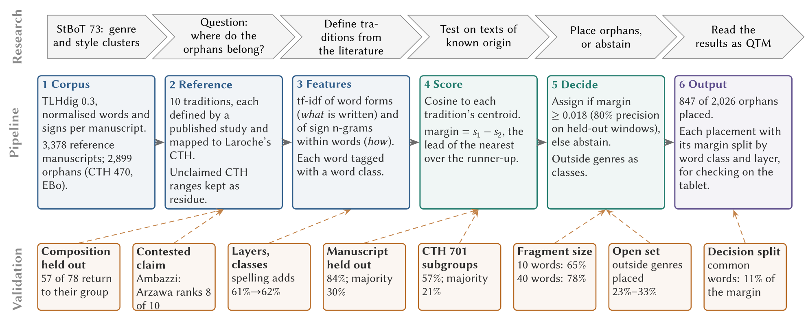
How a word gets its category
The part of speech comes from rules over TLHdig’s own morphological analyses, made by its editors (qtm/wordclass.py); the categories follow StBoT 73, Table 4. Nouns are then sorted by the meaning of TLHdig’s German gloss: realia (things, ritual materials, plants), places, animals and body, abstract nouns, adjectives. That gloss list (5,494 glosses) was drafted by Claude and is a fixed, correctable file (labels/gloss_lexicon.tsv).
| Written | TLHdig’s analysis (editor’s choice) | Rule | Category | Confidence |
|---|---|---|---|---|
| nu | nu · CONNn (connective) | tag of the selected analysis | Function word | high |
| na-at | n=at · CONNn=PPRO.3SG.N.NOM or .ACC “and it” (no choice made) | readings agree; head CONNn | Function word | medium |
| A-NA {GIŠ}BANŠUR | one TLHdig word: BANŠUR “table”, …:D/L.SG | split: preposition + noun | A-NA function word; BANŠUR noun | high |
| da-a-i | dā- “take” · 3SG.PRS · stem class II.2 | verbal stem class | Verb | high |
| BE-LÍ-IA | BĒLU “lord” · NOM.SG_PPRO.1SG.GEN | head (NOM.SG); the suffix “my” does not count; gloss “Herr”: a person | Agent | medium |
| {MUNUS}ŠU.GI | determinative MUNUS “woman” | determinative | Agent | high |
| {m}Kupanta-{D}KAL | determinative m (a man’s name) | person before deity | Agent | high |
| {D}UTU-uš | determinative D | determinative | Deity | high |
| ar-ḫa (no choice made) | candidates: “stand” 1SG, ADV, POSP, PREV, “border” | the editors’ choice for arḫa elsewhere (1,835 of 1,836) | Function word | medium |
| šiena (Hurrian line) | the line’s language: Hurrian | language tag | Foreign word | high |
| ~zi (broken word) | none | — | unknown | low |
How sure are the categories?
| Confidence | basis | share of words |
|---|---|---|
| high | editor’s selected analysis, determinative, language tag, split or Akkadian preposition | 62.7% |
| medium | all analyses agree; same form selected elsewhere; agent logogram | 25.1% |
| low | analyses disagree, or none (broken words) | 12.2% |
320,638 legible words in the texts the experiments use (wordclass_confidence.json).
- A philologist’s blind audit of 178 words (about 60 per level): 93% right at high confidence, 88% at medium, 70% at low; 89% of all words, weighted by level
- Five rules revised on the audit’s notes (broken enclitic chains, determinatives of unanalysed words, compound logograms …); 2.2% of the words changed. In-sample, the audit now scores 97 / 88 / 88%, 94% overall (an upper bound), and every experiment was rerun
- Correcting by hand: a review sheet of the most frequent forms and a corrections file that every run applies (
review_wordclass.py) - Known limits: 9.3% unknown, most of them broken words; syllabic Akkadian ša has no analysis; participles count as verbs; the noun meaning classes have not been audited
Results
1 2 3 4 5 6 7 8
Do the traditions hold? Leave one manuscript out
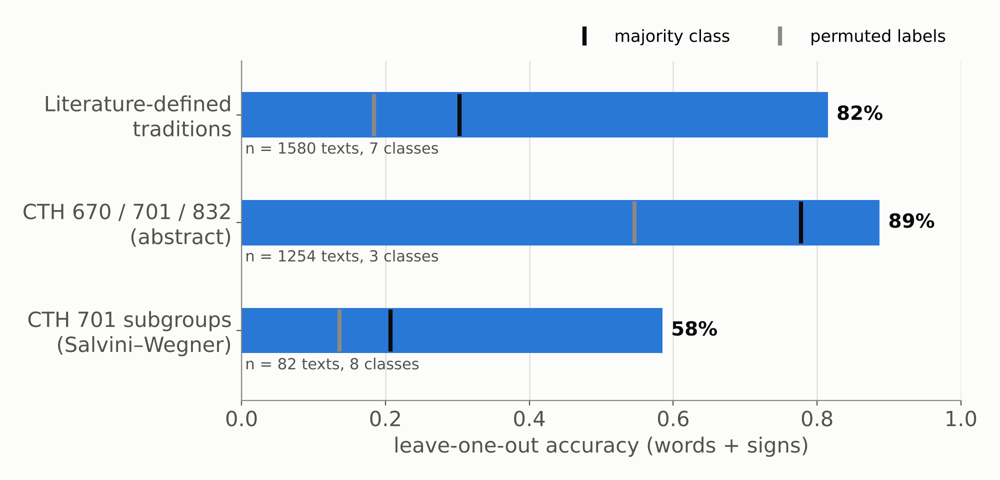
Every manuscript of 17+ words is removed in turn and placed against the traditions built from the rest. Baselines: always guessing the largest tradition, and the same procedure with shuffled labels (200 permutations).
Leave one composition out: are the scholarly groups recovered?
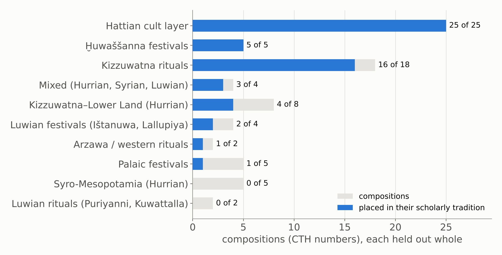
Each CTH number is removed with all its manuscripts and placed against the traditions built from the rest, so no copy or duplicate of the same composition can help.
A contested attribution: the Ambazzi rituals
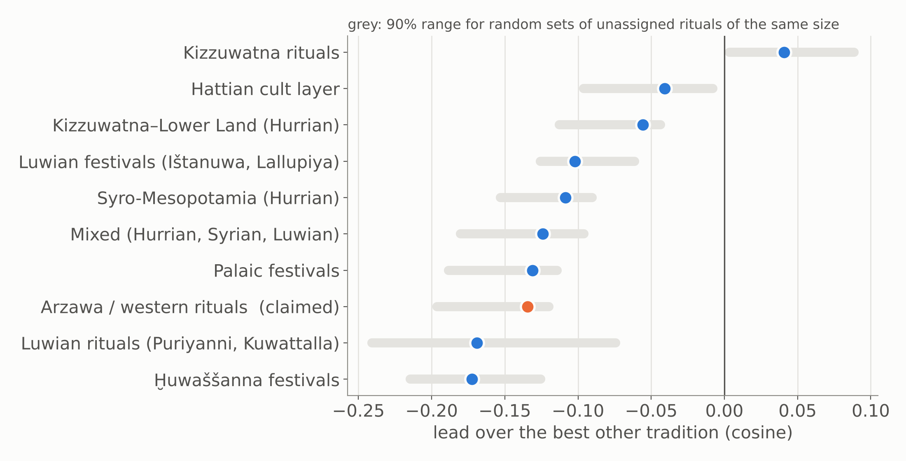
- The six Ambazzi manuscripts (CTH 391, 429, 463), pooled, rank the western (Arzawa) group 8th of 10; their lead is what random unassigned rituals get (p = 0.18)
- None of the 20 most distinctive western words occurs in them except É: no kurša- “hunting bag”, KAL, MUŠEN.DÙ “augur”, TU₇, paimi, pattar
- Their own words (ḫaršialli, aki, petaz) occur in at most 3% of any tradition’s manuscripts
- Nearest is Kizzuwatna (5 of 6), but no more than for any unassigned ritual (p = 0.66): a generic ritual, not a member of a defined tradition
How small can a fragment be?
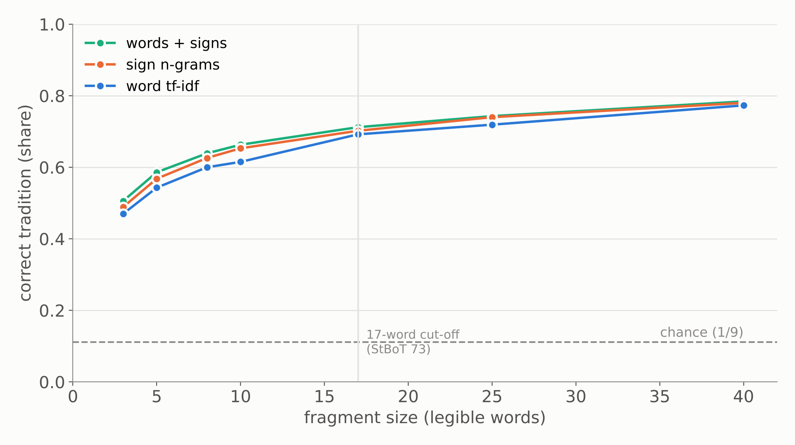
Long manuscripts are cut into random windows of k words and placed. The abstention margin (0.018) is set where placed windows are right 80% of the time.
Is it vocabulary, orthography, or date?
Remove all logograms (Sumero- and Akkadograms)
- word tf-idf: 82% → 76%
- sign n-grams: 84% → 81%
The signal survives without the cultic logographic vocabulary.
Script date (MS vs NS)
- inside CTH 701 the method does not predict script date above the majority baseline (73% vs 83%)
- neither do the orthographic rates (79% vs 83%)
So the groupings are not script-date clusters.
What identifies a tradition: what is written, or how?
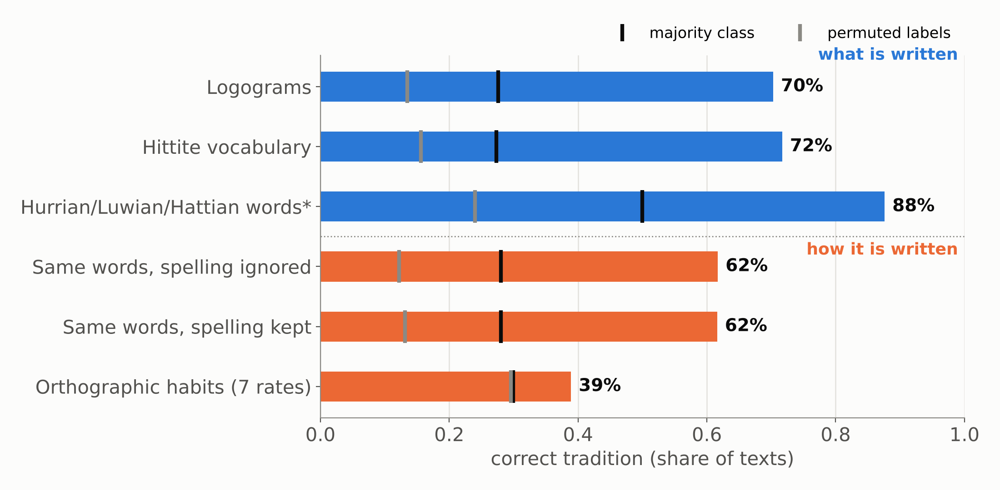
Each layer alone, leave one manuscript out, 10 traditions, 1,627 manuscripts. *Only the 396 manuscripts with foreign-language words. Orthographic habits: 10-fold LDA on seven per-text rates.
Cultural profiles: each tradition’s distinctive vocabulary
| Tradition | Logograms | Hittite and foreign words |
|---|---|---|
| Kizzuwatna rituals | SÍG, ZA.GÌN, SA₅, LÀL, ŠU.GI | tarpalli-, ḫuittiya-, kureššar, lukkatta |
| Kizzuwatna–Lower Land | UP-NI, BA.BA.ZA, NAM-MA-AN-DUM | manuzzi, nupatik, šipant-, keldi |
| Syro-Mesopotamia | AZU, EREN, SÍSKUR, AD.KID | ḫurlili, ḫuprušḫi, aḫrušḫi, kelu |
| Mixed | KI.MIN, NINDA.SIG, IŠTAR | Ḫepat, Ninatta, Kulitta |
| Ištanuwa and Lallupiya | ZA.LAM.GAR, KA.GAG, DUMU.LUGAL | ḫuḫupal, kimri, ḫuwaši |
| Ḫuwaššanna | BE-EL, NAR, SÌR-RU, KAŠ | palwai-, aku- “drink”, takarmun |
| Palaic festivals | GEŠTIN, ŠU.GI, AŠ-RI | išnuri, ziparwa, kataḫzipuri, ḫašammili |
| Hattian cult layer | LUGAL, DUMU.É.GAL, GIŠ.INANNA, ALAM.ZU₉, MUḪALDIM | ḫalzai, petai, taparna, katte |
| Western (Arzawa), 11 texts | KAL, MUŠEN.DÙ, TU₇ | kurša-, pattar, lak- |
| Puriyanni and Kuwattalla, 10 texts | EME, SAG.DU, ŠU.GI | pankawaš, karpi-, linkiya- |
Weighted log-odds with an informative prior (Monroe et al. 2008), counted by manuscripts. Full lists in E7_distinctive_features.csv.
Scribal profiles: habits of copying lines, not regions
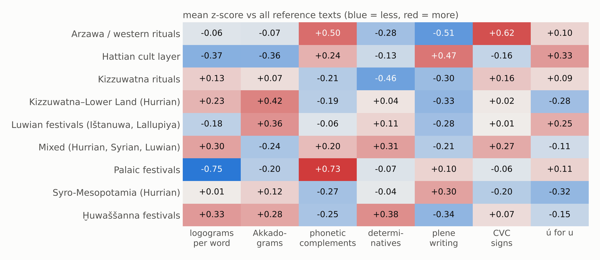
| Same word, plene spelling | where it clusters |
|---|---|
| me-ma-a-i (vs me-ma-i) | 18 of 46 Kizzuwatna–Lower Land texts, all CTH 628 and 712 |
| pé-e-ra-an (vs pé-ra-an) | 6 of 21 Ištanuwa/Lallupiya texts, all CTH 665 |
| me-ma-a-i | 10 of 79 Hattian-layer texts, CTH 591, 627, 733, 820 |
- Spelling habits attach to compositions and their copies, not to whole traditions
- Palaic festivals: fewest logograms, most phonetic complements
Word classes: function words and verbs are not where tradition lives
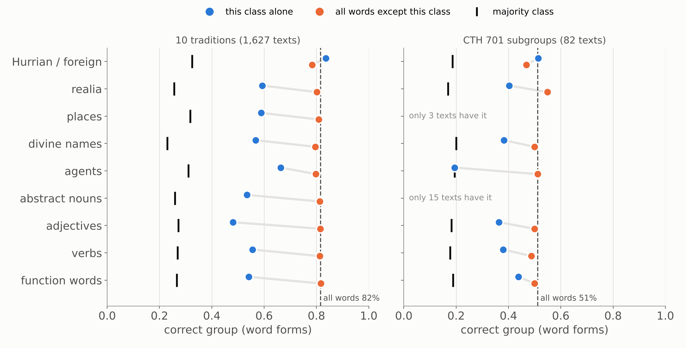
The categories of StBoT 73 Table 4, with its realia split by meaning. Each class alone (blue) and everything except it (orange); word forms, leave one manuscript out.
What a placement rests on: similarity is not the decision
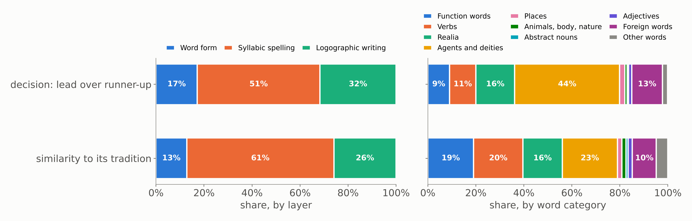
The score is a cosine, so it splits exactly over the features, and each feature over the words it occurs in (word category) and its layer (word form, syllabic or logographic signs). Correctly placed reference manuscripts, leave one out.
- Similarity to a tradition is 47% common material (nu, the signs a, i); the decision (lead over the runner-up) only 11%, because what all traditions share cancels
- Delete the 100 most frequent words (44% of all words): accuracy 84% → 83%
Each tradition is decided by different words
| Tradition | What carries its decisions | Share |
|---|---|---|
| Ḫuwaššanna festivals | agents and deities | 79% |
| Palaic festivals | agents and deities; Palaic words | 60%; 32% |
| Kizzuwatna rituals | realia (SÍG “wool”); function words | 26%; 14% |
| Luwian festivals (Ištanuwa, Lallupiya) | agents and deities; places (Ištanuwa) | 35%; 28% |
| Hattian cult layer | agents and deities; Hattian words; verbs | 47%; 24%; 18% |
| Mixed (Hurrian, Syrian, Luwian) | agents and deities; function words (KI.MIN, EGIR-anda-ma) | 43%; 31% |
| Syro-Mesopotamia (Hurrian) | realia; function words; foreign words | 37%; 21%; 17% |
| Kizzuwatna–Lower Land (Hurrian) | realia (NINDA.GUR₄.RA “thick bread”); verbs | 28%; 17% |
Share of the margin over the runner-up, correctly placed manuscripts (E11). The two small ritual groups (4 and 7 correct manuscripts) are left out.
When the decision rests on common material, distrust it
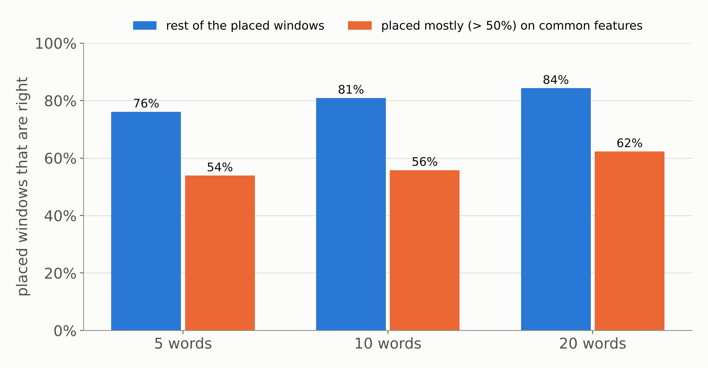
Windows of 5, 10 and 20 words from held-out reference manuscripts, placed with the abstention margin. Common features: attested in at least a quarter of the reference manuscripts.
CTH 701: recovering Salvini and Wegner’s groups
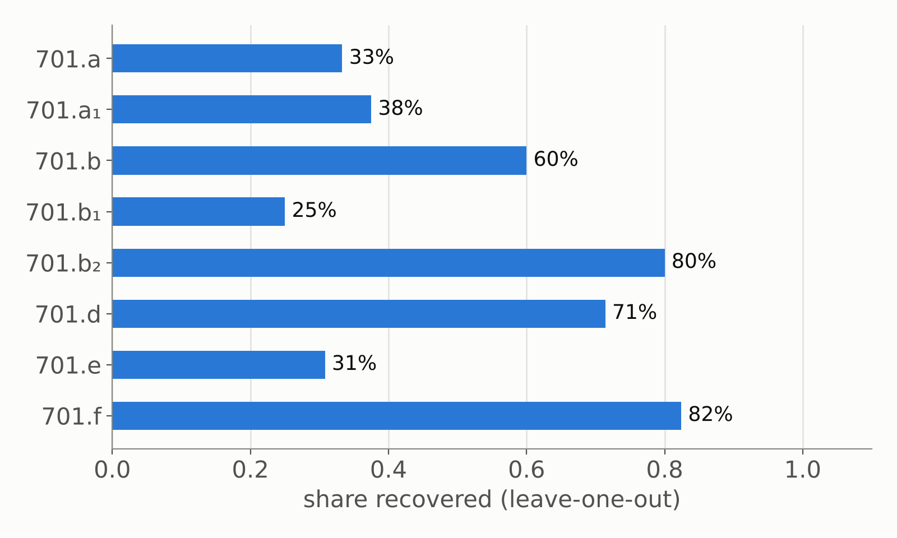
- 82 manuscripts in 8 groups (a–f), labels from the Mainz Konkordanz (one Konkordanz error corrected)
- 57% recovered, against a 21% majority baseline
- The unlabelled 701 fragments and group f are placed among a–e as candidate attributions (table in the repo)
Back to the fragment
1 2 3 4 5 6 7 8
KBo 41.22: which words decide
Shading: each word’s share of the decision.
- Nearest: Luwian rituals of Puriyanni and Kuwattalla (similarity 0.39), runner-up the Kizzuwatna rituals (0.25)
- Margin 0.144, eight times the abstention rule (0.018): a confident placement
- Carried by three words: EME-an “tongue”, pangawaš “of the multitude”, karpin “anger”; the first two have readings that disagree, so they count as other words, karpin as an abstract noun
- The function words and the common material argue against it (−14% and −21%): this is not a placement made on nu
KBo 41.22: the placement, step by step
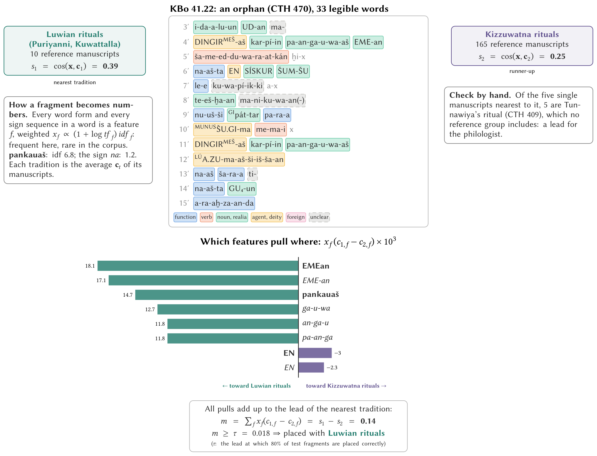
KBo 41.22: its nearest manuscripts
| Manuscript | CTH | similarity |
|---|---|---|
| KBo 9.125+ | 409 Tunnawiya | 0.349 |
| KBo 21.6 | 409 Tunnawiya | 0.341 |
| CHDS 7.140+ | 409 Tunnawiya | 0.327 |
| KBo 64.11 | 409 Tunnawiya | 0.297 |
| KBo 29.197+ | 409 Tunnawiya | 0.297 |
| KBo 43.220 | 760 Kuwattalla | 0.293 |
| KBo 7.55 | 760 Kuwattalla | 0.291 |
| KBo 53.222+ | 409 Tunnawiya | 0.290 |
- The closest manuscripts are not in the reference at all: they are Tunnawiya’s rituals (CTH 409), which no tradition includes
- Its words, counted across the whole corpus: pangawaš in 11 CTH 409 manuscripts and 4 of CTH 760; EME-an in 13 and 7
- For the philologist: look for the parallel in KBo 9.125+ and KBo 21.6 first
Testing the hint: is Tunnawiya part of the Kuwattalla tradition?
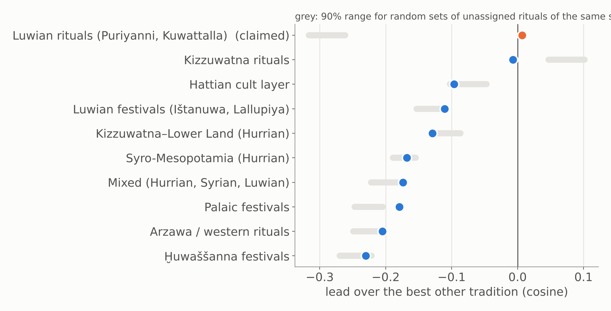
- The 32 Tunnawiya manuscripts (CTH 409), pooled, are nearest to Puriyanni and Kuwattalla, just ahead of the Kizzuwatna rituals (+0.007)
- Random unassigned rituals fall far below Kuwattalla (−0.29); Tunnawiya does not: p = 0.0005
- Random rituals lean toward Kizzuwatna (+0.08); Tunnawiya does not: it is less Kizzuwatna-like than a generic ritual
- One by one, the manuscripts split 14 Kuwattalla, 14 Kizzuwatna
Orphans placed
1 2 3 4 5 6 7 8
Where do CTH 470 and EBo fragments go?
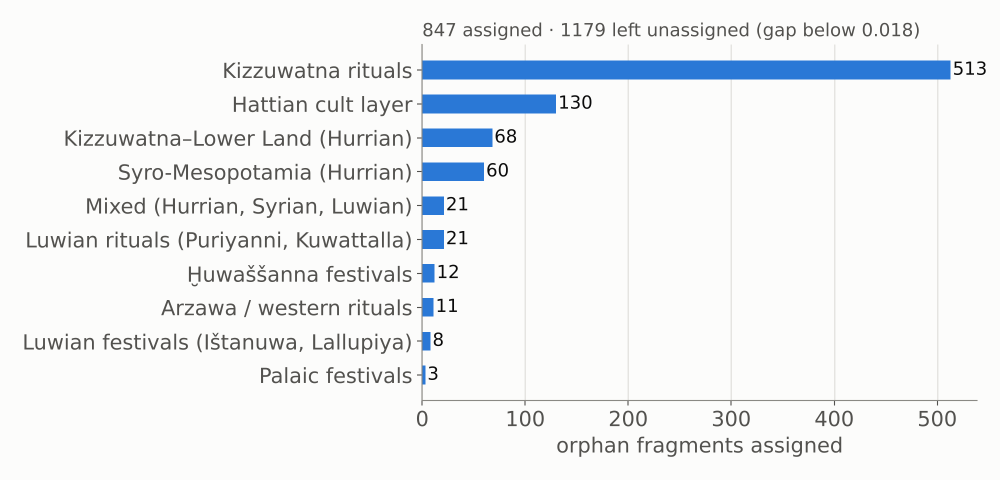
Orphans with 5+ legible words. A fragment is assigned only when its lead over the runner-up passes the margin at which the window test reaches 80% precision (0.018; bootstrap 90% interval 0.018–0.019).
Testing Laroche’s bins
CTH 500, “fragments of Kizzuwatna rituals”
- 132 of 242 manuscripts placed
- only 53 go to the Kizzuwatna rituals; 78 go to the Hurrian festival groups (32 Syro-Mesopotamia, 31 Kizzuwatna–Lower Land, 15 Mixed)
- Fits HFR, which counts CTH 500 among its festival texts
CTH 390–469, rituals no study groups
- 169 of 314 manuscripts placed
- 138 to the Kizzuwatna rituals, 15 Hattian, 12 Puriyanni/Kuwattalla
- The largest ritual tradition attracts generic ritual language: a Kizzuwatna placement of a ritual fragment is the weakest kind
Does a fragment fit any known tradition?
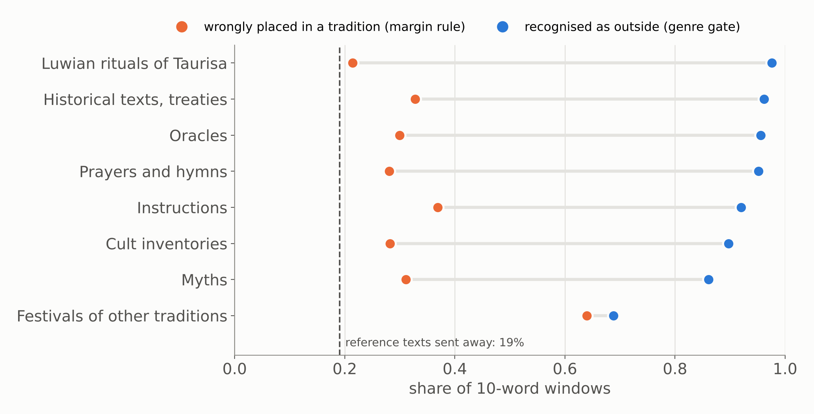
Texts of genres outside the reference (Laroche’s genre blocks; cult inventories, Cammarosano 2021; Luwian rituals of Taurisa, CTH 764–766), cut to 10-word windows. Orange: share placed in a tradition anyway. Blue: share recognised as outside when the outside genres become classes of their own.
QTM: orphans as witnesses of archetypes
- Each tradition is an archetype, approximated by its 200 most characteristic terms
- Each orphan is a witness that attests a small part of it
- Coverage: how much of each archetype the orphans placed in it attest together
- Kizzuwatna rituals 100% (513 orphans), Hattian 98% (130), Kizzuwatna–Lower Land 94% (68), Syro-Mesopotamia 92% (60); the small traditions 28–68% (3–21 orphans)
What we learned about the traditions
- Coherent, composition by composition: the Hattian cult layer (25 of 25 compositions), Ḫuwaššanna (5 of 5), the Kizzuwatna rituals (16 of 18)
- StBoT 73’s Luwian group is two traditions: Ištanuwa and Lallupiya vs Ḫuwaššanna, as the HFR edition splits them
- The three Hurrian festival groups are a continuum: held together by their large compositions (7 of 17 recovered); CTH 500 belongs with them more than with the Kizzuwatna rituals
- Palaic festivals lean to the Hattian layer (3 of 5 compositions): a shared Old Anatolian cult layer
- Traditions are marked by different things: deities and cult personnel (Ḫuwaššanna, Palaic), ritual materials (Kizzuwatna), language layer (Hattian, Palaic), formulae (Mixed, Syro-Mesopotamia)
- Spelling marks the copying line, not the tradition
- Two scholarly questions answered by the data: the Ambazzi rituals are not western; Tunnawiya goes with Kuwattalla and away from Kizzuwatna
What the method adds, and its limits
Adds
- A placement or an honest abstention for each fragment, with its strength
- The words behind each placement, to check by eye
- Nearest manuscripts as candidate parallels and joins
- Tests of scholarly groupings against random rituals
Limits
- Short fragments: 10 words are right 65% of the time
- Placements resting on common material are weak (227 of 847)
- Small traditions (Arzawa, Puriyanni/Kuwattalla: 10–11 manuscripts) cannot yet be trusted
- Word categories are rule-based and 12% low-confidence; the noun meanings come from a gloss list that has not been audited
- Festival manuscripts differ by use (Burgin 2019), which word profiles may pick up
Thank you
Code and data: github.com/shaigordin/measuring-scribal-literacy (orphans/)
TLHdig 0.3: doi.org/10.5281/zenodo.20328284